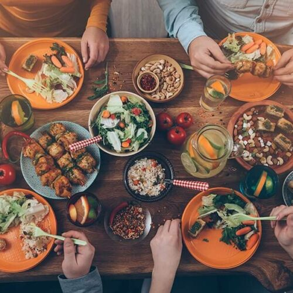
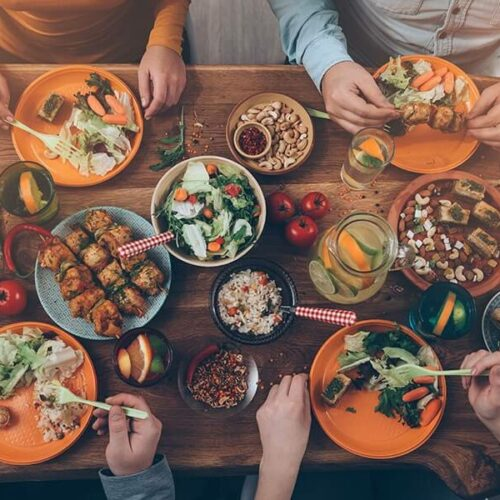
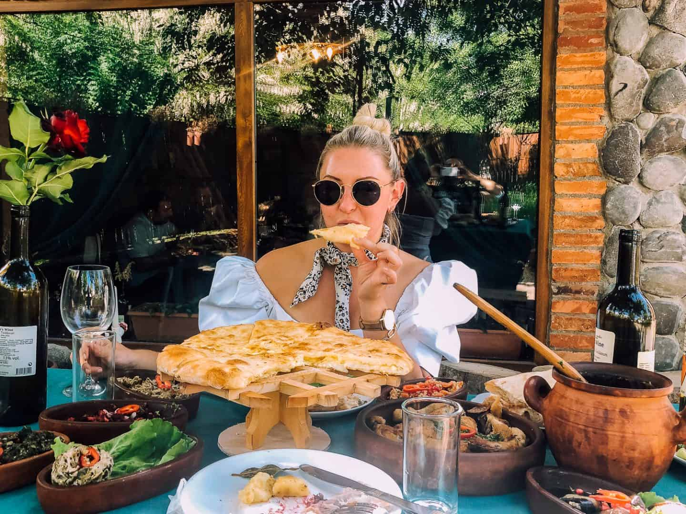
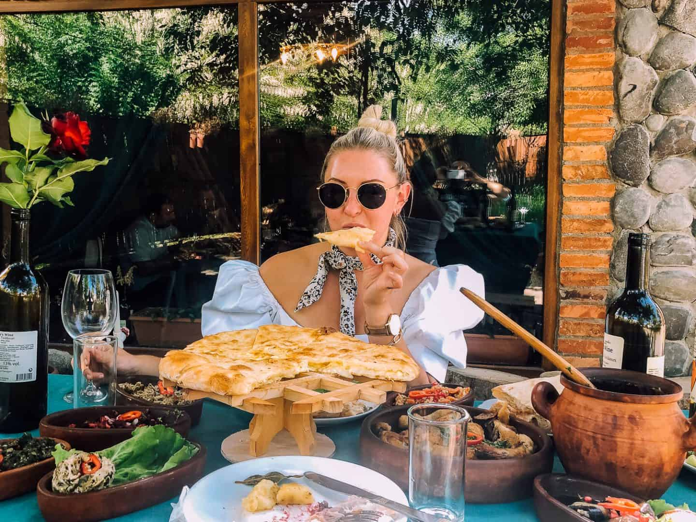

Best restaurants & food outlets in all the major cities.
 



 



A popular garnish for this dish is Daikon radish. The type of fish in it defines a sushi's taste. However, the vinegared rice gives the dish a tangy taste overall. Tuna, eel, and Salmon tend to have a light flavour while octopus flavoured sushi is generally strong in taste.

The dish is then stewed for a few hours which gives it a tender texture and exotic taste. The blast of flavours is surely one of the reasons why the dish is loved globally and is also one of the best dishes in the world. Easy to rustle up, this dish is often served at ceremonies or to honour guests.

Ramen is a Japanese dish made of wheat noodles and served in the broth along with vegetables and meat. Ramen comes in several flavours, from tangy to spicy, depending on the flavour of the broth. Every region in Japan has it's own. Tonkotsu, a popular style of ramen includes pork bone broth and the miso ramen, another popular dish originated in Hokkaido.
A type of sour and hot Thai soup, Tom yam goong is prepared with shrimp along with a load of healthy herbs and spices? lemongrass, lime, kaffir leaves, galangal, and red chili peppers to name a few. the soup plays around with a bit of all possible flavours? spicy, sour, salty and sweet.

A dish popular across the Middle East, Kebabs are originally from Turkey. They consist of ground meat or seafood, fruits, and vegetables in some cases and are cooked on a skewer with a big fire underneath, just like a barbeque on the grill.

A simple yet an incredible dish, Pho (pronounced as 'fuh') is a Vietnamese dish made of rice noodles and meat (usually beef or chicken) served in broth and topped with herbs. The dish has got a great fragrance which lingers in the eater's head for a while.

Peking duck is a dish that finds its way to Beijing. The ducks for this dish are specially bred and slaughtered after 60 days and seasoned first before being roasted in closed ovens. This gives the meat a crisp skin and thin texture. The dish is served with cucumbers, spring onion, and sweet bean sauce.

Paella has got its roots in Valencia, Spain. It is an ancient dish recreated with a modern touch in the present times. There are various ways to eat Paella. The original recipe contains white rice with green beans, meat (rabbit or chicken, sometimes duck), butterbeans, snails, topped with seasoning such as rosemary and.

The Brits love their pies. And why wouldn't they? Steak and kidney pie is a piquant pie filled with diced beef, kidney (often of lamb, beef, or pork), brown gravy, and fried onion. It is a representative dish of British cuisine and culture. The gravy is made up of ale, flavoured beef broth, and cornstarch.

More commonly known as Apple Strudel, Apfelstrudel is a popular pastry in Austria and other parts of Europe. The dish consists of an oval strudel pastry cover with mouthwatering apple filling inside. The apple filling is prepared with grated apples, cinnamon, sugar, breadcrumbs, and raisins. This delicacy tastes best when served with vanilla ice cream and whipped cream. You can experiment with vanilla sauce instead of ice cream and custard instead of cream to try new flavours.

A common street food dish all over Thailand, Pad Thai is a stir-fried rice dish accompanied with noodles. This healthy dish is made with stir-frying noodles with eggs and tofu. What brings out the flavour from the dish is the unique blend of sauces - tamarind pulp, dried shrimp and fish sauce and garnished with garlic and red chillii pepper.

A dish most popular in Central Europe, Goulash is stew meat dating back to 9th century Hungary. The main elements of the dish are the spices, especially paprika. Goulash is prepared from either beef, pork, veal, or lamb. The meat is cut into pieces and neatly seasoned with salt. It is then browned with oil and sliced onion. The dish is left to simmer after adding paprika to it.

Italy's lasagna takes over Pizza to be added in the "world's best food dishes" list because of its comeback. It is one of the oldest pasta but has become popular only in the present times. The ingredients itself sound mouthwatering - meats, pasta, vegetables, tomato sauce, and lots and lots of cheese.

Kimchi is a staple Korean side dish prepared from fermented vegetables such as Korean radishes, and cabbage and topped with several seasonings, including garlic, chilli powder, scallions, and ginger. There is a huge variety of Kimchis made with different ingredients are is sold practically for free as starters in most restaurants in Korea.

Crunchy on the outside and juicy within, fried chicken, as the name suggests, is a dish consisting of chicken pieces deeply fried, giving it a crisp coating. The chicken is then seasoned with herbs and spices. The spicier, the better. Excess flour is used to make the crust thicker. The dish was first prepared in the 1830s, the rest is history.

India has a lot to contribute when it comes to cuisine and dosa is the best dish to represent that. To put it in simple terms, dosa is a type of pancake made from fermented rice batter. The dish looks like a crepe and the main ingredients are black gram and rice. Earlier, Dosa was prominent only in South India and Sri Lanka. It is now a well-known dish in India and all over the world.